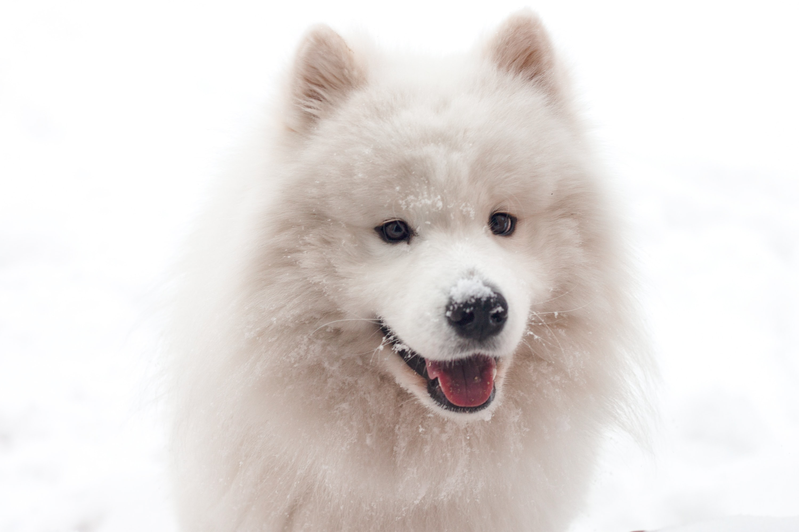
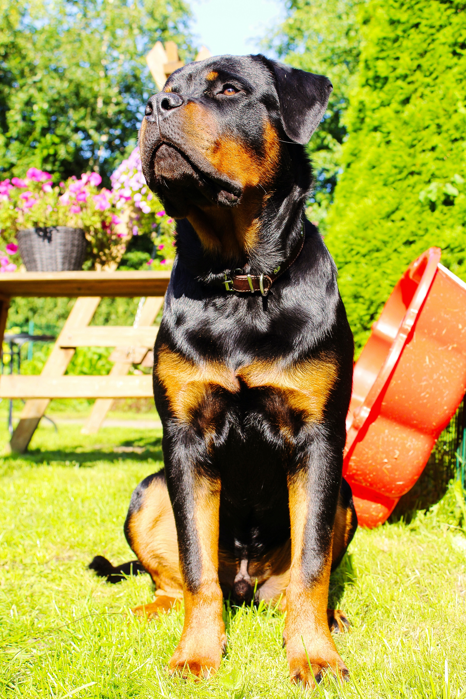

골든 리트리버
- 출생지: 영국
- 수명:10~12년
- 성격: 친밀하며 온순하고 애정있고 확실한 성품임
- 크기: 대형(수컷:56~61cm, 암컷:51~56cm)
- 색상: 황금색
골든 리트리버는 대형견에 속하며 온순한 성격을 지녀 사람뿐만 아니라 다른 동물들과도 잘 어울리는 성격을 지녔다. 워낙 영리하고 똑똑해서 훈련시키기도 어렵지 않다. 또 골든 리트리버는 래브라도 리트리버와 달리 장모의털 때문에 관리를 잘 해줘야 한다. 관절염,비만,탈모증 등 질병을 유의하여 키워야 한다.

래브라도 리트리버
- 출생지:캐나다
- 수명:12년
- 성격: 온순하며 반려인에게 장난을 치는것을 좋아함
- 크기: 대형(54~57cm)
- 색상: 검은색, 노란색, 초콜릿색
래브라도 리트리버는 대형견에 속하며 워낙 똑똑하고 시각장애인 안내견으로 잘 알려져있다. 단모종이라 털빠짐이 덜할거 같지만 그렇지 않다. 일년 내내 털갈이한다는 소리도 있다. 그리고 물을 좋아해 수영하는 것을 즐긴다고 한다. 고관절이형성증, 간질등의 질병을 유의하여 키우길 바란다.

사모예드
- 출생지:러시아북구,시베리아 지역
- 수명:10~12년
- 성격:친근하고 사교성이 매우 뛰어남 기민하고 생기바랄하다
- 크기:대형(53~57cm)
- 색상:순백색,크림색
사모예드는 대형견에 속하며 영리하고 독립적인 성향을 가지고 있다. 다른 견종들과 잘어울리며 썰매견이나 가정용 애완견으로 인기가 많은 종이다. 털은 이중털로 속털은 조밀조밀하며 굵고 부드럽다. 반면 겉털은 길고 뻣뻣하다. 당뇨,백내장등 질병을 유의하며 키우길 바란다.

시베리안 허스키
- 출생지:시베리아
- 수명:14년
- 성격:쌀쌀맞고 시크하며 무뚝뚝함 그러나 사람을 좋아함
- 크기:대형(50~60cm)
- 색상:흰색과검정이 섞임
시베리안 허스키는 대형견에 속하며 훈련을 받지 않으면 쉽게 싫증을 내고 고집이 세다. 다만 훈련을 잘 시키면 일을 잘 수행해낸다. 매서운 외모와는 다르게 온순한 성격이다. 썰매끄는 개로 활용하기도 하였다. 활동량이 워낙 많아 운동을 시키지 않으면 비만이 올수도 있다. 각막이상증, 망막위축증등 질병에 유의하여 키우길 바란다.

알래스카 말라뮤트
- 출생지:미국
- 수명:10~14년
- 성격:다정하고 친근함 어릴땐 장난을 잘치지만 성견이 된후는 충성심 깊고 헌신적이며 위엄이 강하게 느껴짐
- 크기:대형(58~63cm)
- 색상:옅은회색부터 검은색에 가까운색
알래스카 말라뮤트는 대형견에 속하며 지능이 높고 강한 체력을 가지고 있으며 조심성과 경계심이 많다. 썰매견으로 유명하며 무거운짐을 운반 하는데 활용됨 단체 생활의 특성으로 서열 정리가 필요하고 복종 훈련이 필요한 품종이다. 고관절이형증 연골 형성 장애등 질병에 유의하며 키우길 바란다.

보더콜리
- 출생지:스코틀랜드
- 수명:10~14년
- 성격:지능이높고 끈가가있는 성격
- 크기:대형(48~53cm)
- 색상:흰색과 흑색,회색,갈생등 다향한색이 섞임
보더콜리는 대형견에 속하며 지능이 높고 끈기가 있으며 주인에게 순종적인 견종이다. 똑똑하기도 하고 체력이 넘쳐 일하는 것을 좋아하며 양몰이견으로 유명한 견종이다. 눈병이 자주 걸린다고 한다. 이점 유의하여 키우길 바란다.

도베르만
- 출생지:독일
- 수명:10~12년
- 성격:친근하고 차분함 또 가족에게 매우 헌신적임
- 크기:대형(63~72cm)
- 색상:검은색혹은 적갈색이 석인 갈색
도베르만은 대형견에 속하며 사람을 매우 좋아하고 정이 많으며 특히 견주에게 충성심이 강해 보통 한주인만 섬긴다. 또 근력이 강하며 경비견,경찰견등 으로 활동함 워블러 증후군, 갑상선 기능 저하증등 질병이 쉽게 나타난다하니 이점 유의하며 키우길 바란다.

저먼 셰퍼트
- 출생지:독일
- 수명:7~10년
- 성격:영리하며 붙임성이 좋고 책임감이 강하다.
- 크기:대형(55~66cm)
- 색상:검정색,붉은색,회색,흰색
저먼 셰퍼트는 대형견에 속하며 독일의 대표 견종 으로 불리며 목양견으로 길러졌다. 뛰어난 지능과 근육질 몸에 성격 또한 용감하며 침착하다. 지금은 군견,맹도견 으로 활약 하고 있으며 충섬심과 사회성이 좋아 명령에 복종한다고 한다. 척추와 관절등 유전병으로 인해 큰무리가 있어 이점 유의하여 키우길 바란다.

스탠다드푸들
- 출생지:프랑스
- 수명:10~15년
- 성격:활동적이며 지적이고 점잖은 성격임
- 크기:대형(40cm이상)
- 색상:검은색,흰색,살구색,미색
스탠다드푸들은 대형견에 속하며 높은 지적 능력과 운동능력을 살려 안내견,치유견으로 활동한다. 가족에 대한 애정이 남다르고 다른사람 또는 다른견종 에게도 친절하며 친근감있게 행동한다. 지적 수준이 높아 훈련이나 교육이 쉽다. 백내장, 유루증, 각막염등 질병에 걸리니 이점 유의하며 키우길 바란다.

로트와일러
- 출생지:독일
- 수명:8~10년
- 성격:매우 헌신적이며 고분고분하고 온순함
- 크기:대형(56~58cm)
- 색상:검은색과 황갈색이 섞임